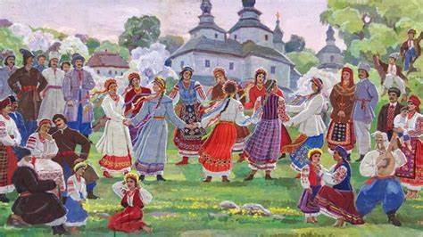
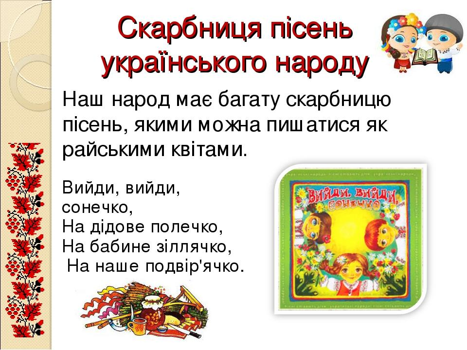

Українська пісня – це душа народу

12 серпня 1962 року в космосі пролунала перша
пісня – і вона
була українською
Катя Пташка - 12/08/2024
Українська пісня
Споконвіків пісня була для українського народу невід’ємною частиною буття. Чи то посівна, чи то жнива, чи то народження дитини, чи то утрата рідного, на всі свята і під час війни. Українці оспівували все, що було на серці, у піснях виливаючи душу, свою надію, віру, любов.
Притча
Серед людей ходить така притча: колись Бог вирішив обдарувати всі народи талантами. Французи вибрали елегантність i красу, угорці – любов до господарювання, німці – дисципліну i порядок, росіяни – владність, поляки – здатність до торгівлі, італійці одержали хист до музики. І як підвівся Господь зі Свого трону, так побачив у кутку заплакану дівчину.
– Хто ти? Чого плачеш?, – запитав Господь.
– Я – Україна, а плачу, бо стогне моя земля від пролитої крові й пожеж. Сини мої на чужині, на каторжній роботі, вороги знущаються із вдов та сиріт, у своїй хаті немає правди й волі.
– Чого ж ти не підійшла до мене раніше? Я всі таланти роздав. Як же допомогти тобі?
Дівчина хотіла вже йти, та Бог зупинив її.
– Є у мене неоціненний дар, який прославить тебе на цілий світ. Це – пісня.
Узяла дівчина-Україна божий дарунок i міцно притиснула його до серця. Поклонилася низенько Всевишньому i понесла пісню в народ.
Українську пісню знають у всьому світі
Не дарма українську пісню знають у всьому світі. Зокрема, у фондіУкраїни в ЮНЕСКО нараховується близько 15 тисяч творів і це найбільша збірка пісень міжнародної організації.
Саме українська пісня першою пролунала поза межами Землі. Це сталося під час польоту космонавта Андрія Ніколаєва та Павла Поповича1962 року. Останній власне і заспівав на весь космічний простір: “Дивлюсь я на небо і думку гадаю – чому я не сокіл, чому не літаю…” (автор слів – Михайло Петренко).
Олександр Довженко у свій час писав: “Народ, якого позбавили багатьох можливостей, у кривавій боротьбі вилив свою душу, свій поетичний геній в єдине, що міг – у пісню, в безсмертну українську народну пісню. Українська пісня – це бездонна душа українського народу, це його слава”.
Пісні які знає кожен
- Розпрягайте хлопці коні
- Ой у вишневому саду (О милий мій)
- Несе Галя воду
- Їхав козак за Дунай
- Ти ж мене підманула
- Ой на горі два дубки
- Чорні брови, карії очі
- Ой у гаю при Дунаю
- Ой чий то кінь стоїть